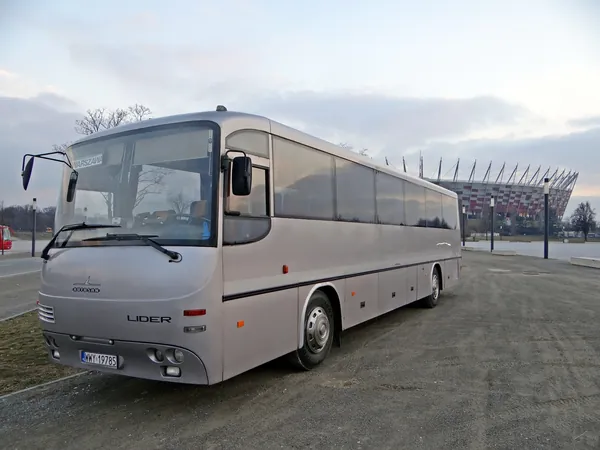
Linie regularne
Od początku działalności wozimy pasażerów na trasach Lubiel Nowy - Wyszków - Warszawa oraz Warszawa - Wyszków - Komorowo - Rząśnik.
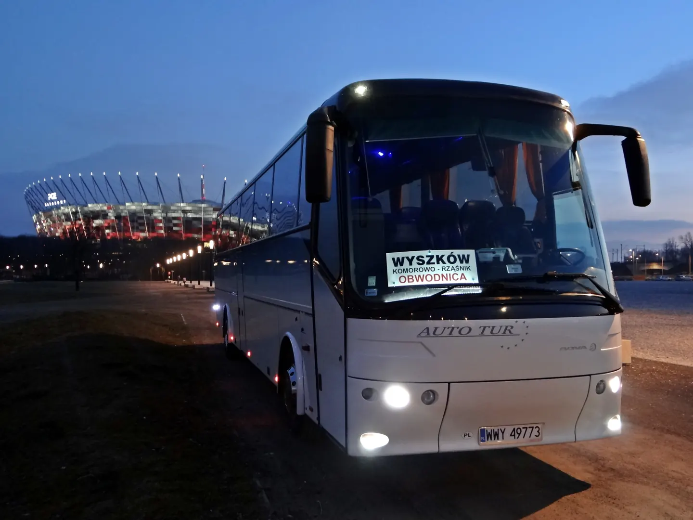
Wozimy pasażerów na liniach regularnych, wynajmujemy autokary szkołom i firmom, a na ślub podstawiamy limuzynę z kierowcą.
Każdy kurs zaczyna się od rozmowy. Cenę wynajmu ustalamy indywidualnie, zależnie od trasy, liczby kilometrów i czasu wynajmu.

Od początku działalności wozimy pasażerów na trasach Lubiel Nowy - Wyszków - Warszawa oraz Warszawa - Wyszków - Komorowo - Rząśnik.
Szkoły, przedszkola i uczelnie. Autokary sprawne i czyste, przy każdym fotelu pasy, a do tego ABS, ESP i ASR.
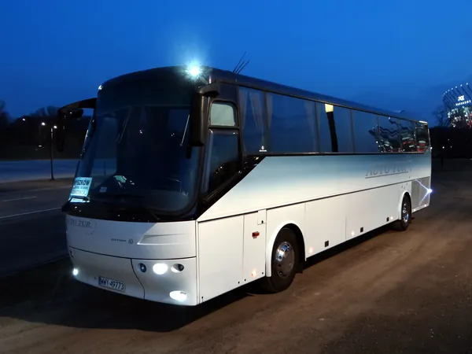
Konferencje, szkolenia, wyjazdy integracyjne. Obsługujemy firmy, instytucje i urzędy: od limuzyny po autokar.
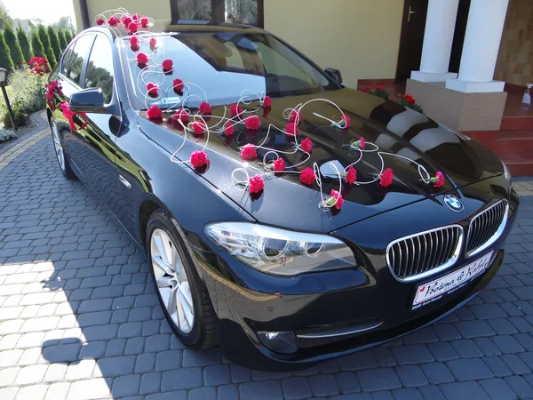
Limuzyna do ślubu i autokar dla gości. Wieczory panieńskie, kawalerskie, studniówki i imprezy okolicznościowe.
Tymi trasami jeździmy od początku działalności firmy.
Godziny odjazdów i ceny biletów: zadzwoń pod 604 277 796 albo 698 937 869.
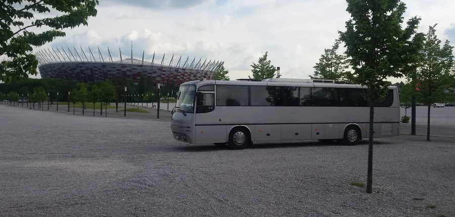
Pięć autokarów turystycznych i limuzyna. Przesuń, żeby zobaczyć wszystkie.
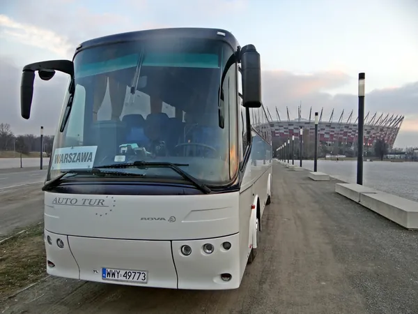
Luźno rozstawione fotele z pełną regulacją. Toaleta, barek kawowy, dwie lodówki, audio-video, duży bagażnik.
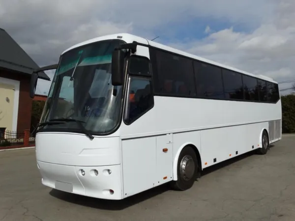
Dużo miejsc siedzących i bardzo duża przestrzeń bagażowa. Toaleta, klimatyzacja, pasy bezpieczeństwa.
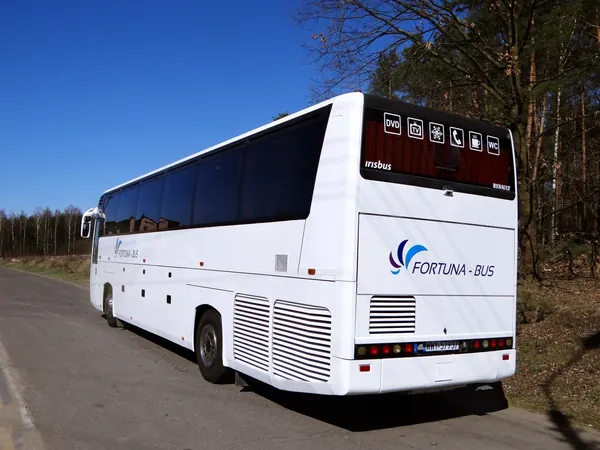
Komfortowy autokar turystyczny z toaletą, barkiem kawowym i dwiema lodówkami.
Wysokie, w pełni regulowane fotele, wygodne także dla bardzo wysokich pasażerów. Linie międzymiastowe i wycieczki.
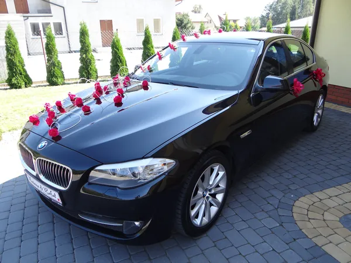
Auto klasy premium: dwustrefowa klimatyzacja, elektrycznie regulowane fotele, nawigacja. Do ślubu i dla gości firm.
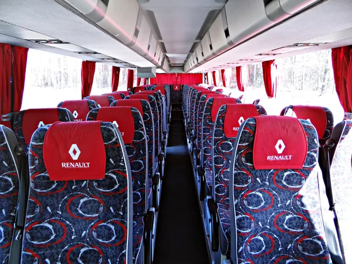
Stoliczki, siateczki, podnóżki, indywidualne oświetlenie i nawiewy przy każdym miejscu.
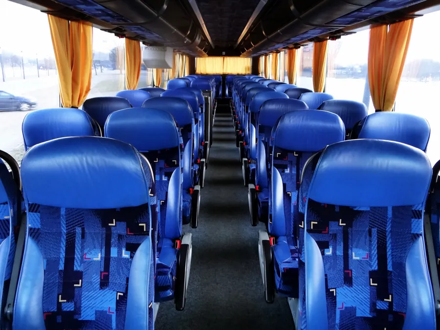
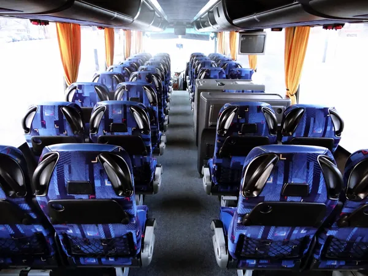
Za kierownicą siedzą kierowcy z wieloletnim doświadczeniem. Na wszystkie usługi mamy wymagane certyfikaty i licencje.
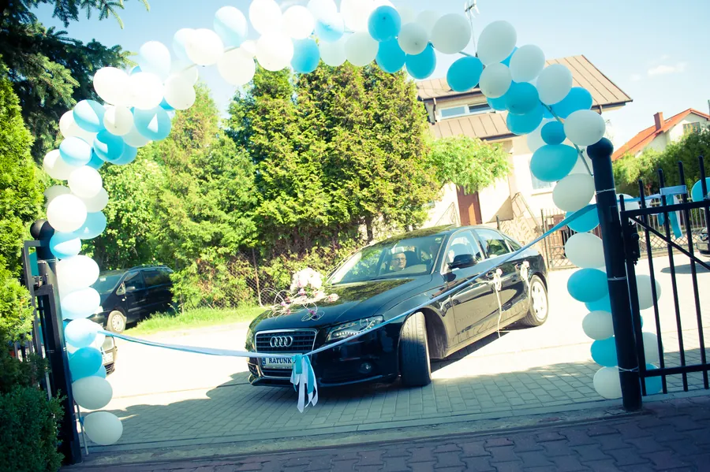
Para młoda jedzie limuzyną, goście autokarem, a wszyscy wracają bezpiecznie. Kierowca ubiorem i zachowaniem dopasuje się do charakteru uroczystości.
Do każdego klienta podchodzimy indywidualnie: ustalamy trasę, godziny i przebieg całego dnia.
Zapytaj o terminNapisz, dokąd i kiedy chcesz jechać, ilu będzie pasażerów. Odpowiemy z wyceną.